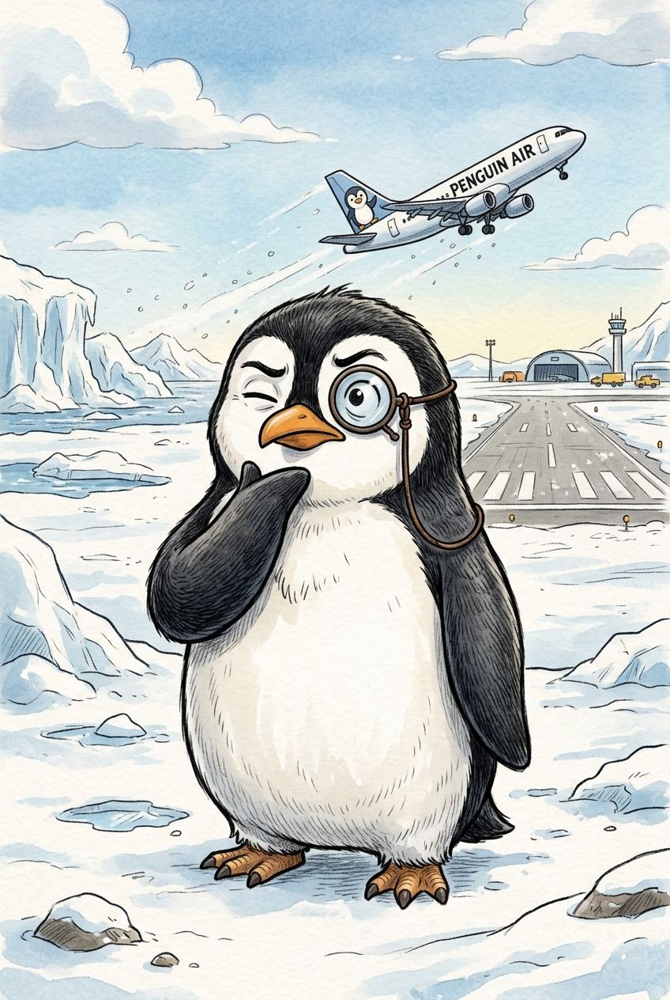
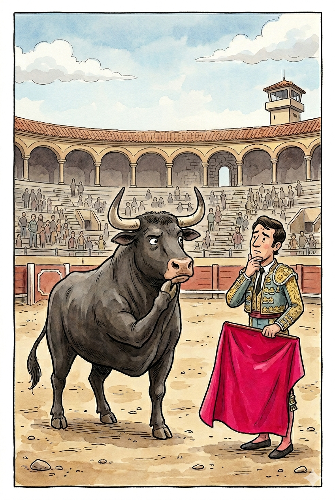
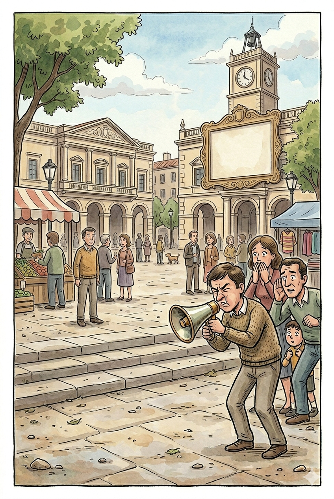

Pinguins Conseguem voar como passáros
Pinguins não voam, mas são excelentes nadadores.

Pinguins Conseguem voar como passáros
Pinguins não voam, mas são excelentes nadadores.

Touros ficam furiosos com a cor vermelha
Touros não enxergam a cor vermelha; eles atacam o movimento do tecido.

Gritamos no espirro para avisar as pessoas ao redor para se afastarem
O som alto ocorre porque o ar é expulso de repente a mais de 150 km/h..